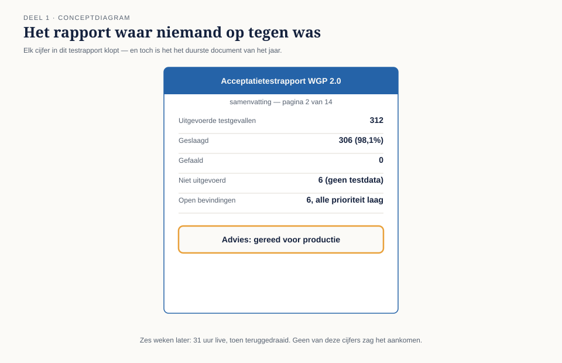
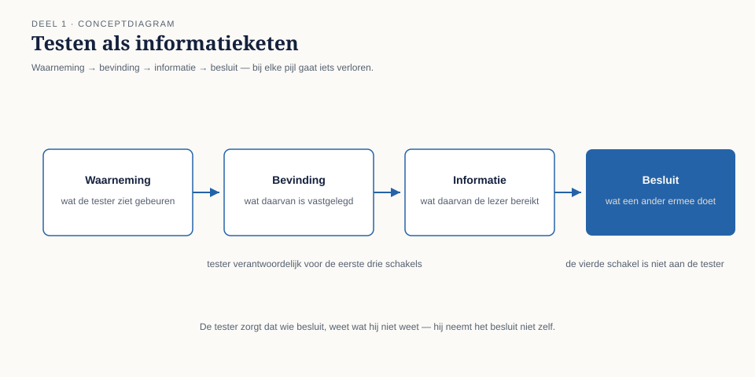
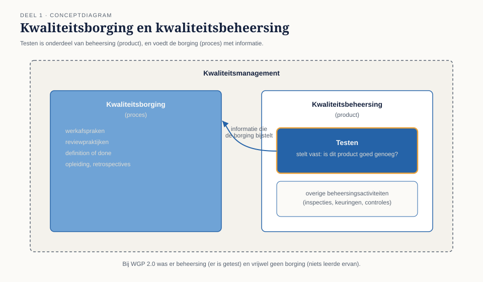
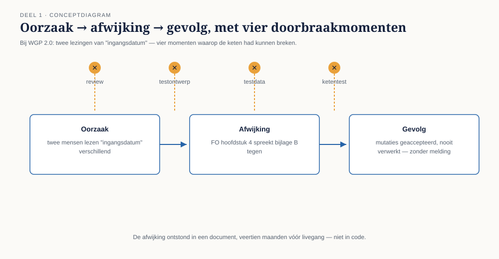
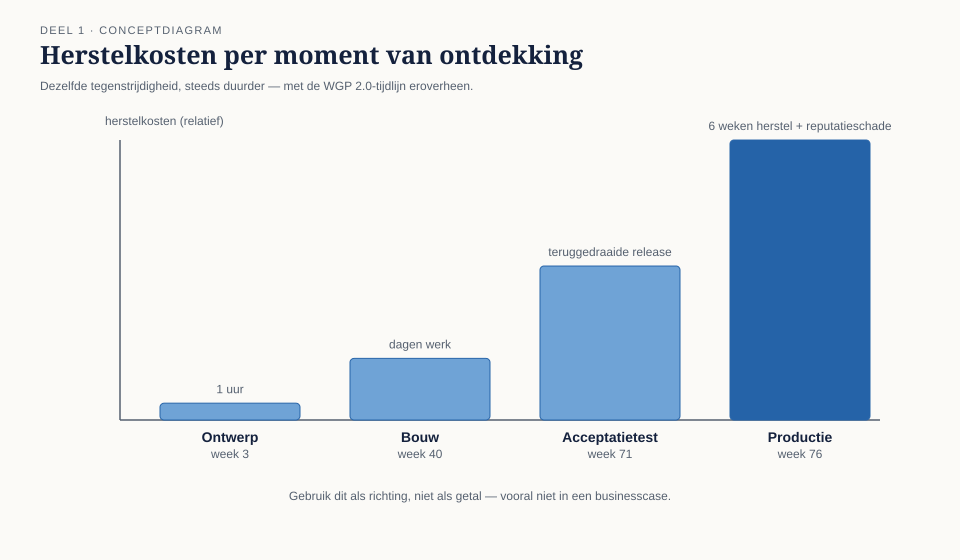
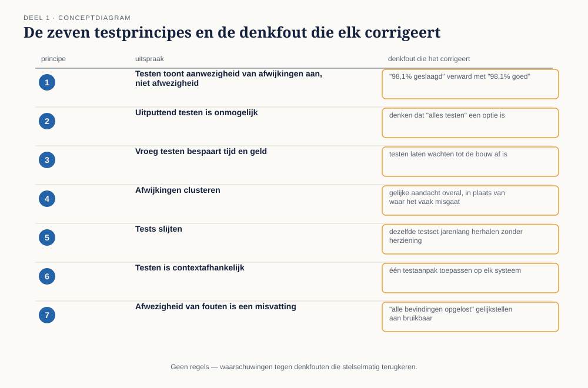

Cursus Testen en Kwaliteitsborging · Niveau 1 (ISTQB CTFL) · Deel 1 van 30
Waarom getest wordt.
Deze cursus begint met een testrapport waarin elk cijfer klopt: 312 testgevallen, 306 geslaagd, nul gefaald, advies "gereed voor productie". Zes weken na livegang wordt het teruggedraaid. In dit deel leert u wat testen werkelijk is, hoe het zich verhoudt tot debuggen en kwaliteitsborging, en waarom een testrapport dat volledig klopt toch het duurste document van het jaar kan zijn — aan de hand van het WGP 2.0-acceptatietestrapport bij pensioenuitvoerder Meridiaan Pensioen.
11secties
±2uleestijd + werkboek
8controlevragen
8bevindingen geïntroduceerd
Positionering. Deze cursus is een voorbereiding op het ISTQB Certified Tester Foundation Level-examen (en voor latere delen Advanced Level) en uitdrukkelijk geen vervanging van het officiële ISTQB-syllabusmateriaal, te raadplegen via istqb.org. Alle formuleringen, figuren en werkvormen in dit materiaal zijn van Ductus; studeer voor het examen altijd óók de officiële bron.
Niveau 1: ➊ Waarom getest wordt (hier) → ➋ Het testproces → ➌ Testen in de levenscyclus → ➍ Statisch testen → ➎ Black-boxtechnieken → ➏ White-box en ervaringsgebaseerd testen → ➐ Risicogebaseerd testen → ➑ Uitvoeren en bevindingen → ➒ Rapporteren en gereedschap → ➓ Examentraining en capstone
01
Waar dit deel over gaat
⏱ 8 min
Dit is het eerste deel van de cursus en het legt de bodem: wat testen eigenlijk is, en waarom "de testgevallen zijn geslaagd" iets heel anders betekent dan "het systeem is goed".
Aan het eind van dit deel kunt u:
uitleggen wat testen is en welke doelen testen kan dienen, en die doelen onderscheiden per situatie;
het verschil benoemen tussen testen, debuggen, kwaliteitsborging en kwaliteitsbeheersing;
de keten van oorzaak, afwijking en gevolg beschrijven en toepassen op een concreet incident;
de zeven testprincipes noemen, uitleggen en herkennen in een praktijksituatie;
beargumenteren waarom een testrapport informatie levert en geen oordeel.
Dit deel introduceert de acht testbevindingen T1 tot en met T8 uit het WGP 2.0-dossier — het skelet waar de rest van dit niveau op verder bouwt.
02
Het testrapport dat niemand ter discussie stelde
⏱ 10 min
Op haar tweede werkdag bij Meridiaan Pensioen kreeg Iris Verweij een pdf van veertien pagina's toegeschoven, met de opmerking: "Dit is het testrapport van WGP 2.0. Kijk er eens naar, dan snap je waarom je hier zit."
Uitgevoerde testgevallen: 312
Geslaagd: 306 (98,1%)
Gefaald: 0
Niet uitgevoerd: 6 (geen testdata beschikbaar)
Open bevindingen: 6, alle prioriteit laag
Advies: gereed voor productie
Zes weken later was het nieuwe werkgeversportaal live gegaan en na 31 uur weer teruggedraaid. Salariswijzigingen met terugwerkende kracht werden door het portaal geaccepteerd, maar nooit doorgezet naar de kernadministratie. Zonder foutmelding. Aan geen van beide kanten.

Figuur 1-1 — De samenvattingspagina van het WGP 2.0-acceptatietestrapport, met de vier cijfers die niemand ter discussie stelde.
Het eerste wat u over dit rapport moet weten is dit: elk cijfer erin klopt. Er is niet gelogen, niet gemanipuleerd en niet gesjoemeld. De 312 testgevallen zijn werkelijk uitgevoerd. Er zijn er werkelijk 306 geslaagd. Het advies "gereed voor productie" is in eer en geweten gegeven door mensen die hun best deden. En toch is dit rapport het duurste document dat Meridiaan dat jaar heeft geproduceerd.
Daar begint het vak. Testen gaat niet over het uitvoeren van testgevallen. Testen gaat over de vraag welke uitspraak je aan het eind kunt doen, en hoeveel die uitspraak waard is.
Controlevraag
Uit Werkboek deel 1, Opdracht 1.1 — het rapport nog een keer gelezen
1Is de uitspraak "het systeem is gereed voor productie" feitelijk juist, feitelijk onjuist, of juist maar misleidend?Toon antwoord
Feitelijk onjuist, en bovendien buiten de rol. Ten eerste is "gereed voor productie" geen waarneming maar een oordeel, en dat oordeel is niet aan de tester. Ten tweede kan de uitspraak op grond van deze gegevens niet worden gedaan: er is geen relatie gelegd tussen wat is getest en wat op het spel stond.
03
Wat testen is
⏱ 15 min
Testen is het geheel van activiteiten waarmee je informatie verzamelt over de kwaliteit van een systeem, om anderen in staat te stellen daarover een besluit te nemen. Drie woorden in die zin verdienen aandacht.
Informatie, niet zekerheid
Een test die slaagt bewijst niet dat het systeem goed is; hij toont aan dat het systeem zich in dit ene geval gedroeg zoals verwacht. Wie dat verwart, schrijft rapporten zoals dat van WGP 2.0.
Kwaliteit, niet correctheid
Een systeem kan foutloos rekenen en toch onbruikbaar zijn, te traag, onveilig, of onbegrijpelijk voor de mensen die ermee moeten werken. Kwaliteit is de mate waarin het systeem voldoet aan de behoeften van degenen die het gebruiken — en die behoeften zijn breder dan de eisen die iemand heeft opgeschreven.
Anderen in staat stellen, niet zelf beslissen
Dit is de rolgrens die deze hele cursus draagt, van dit deel tot en met de masterproef. De tester bepaalt niet of er live wordt gegaan. De tester zorgt dat degene die dat besluit neemt, weet wat hij niet weet.

Figuur 1-2 — Testen als informatieketen: waarneming → bevinding → informatie → besluit. Bij elke pijl gaat iets verloren; de tester is verantwoordelijk voor de eerste drie schakels, niet voor de vierde.
Een hardnekkig misverstand is dat testen begint zodra er iets werkt. In werkelijkheid bestaat het grootste deel van het vak uit denkwerk dat plaatsvindt vóórdat er ook maar één scherm bestaat. Testen omvat dus zowel dynamisch testen (het systeem uitvoeren en gedrag waarnemen) als statisch testen (documenten, code en modellen beoordelen zonder ze uit te voeren) — deel 4 gaat volledig over dat laatste.
Testdoelen verschillen per situatie
Testen kan verschillende dingen dienen: fouten vinden vóór ze schade doen, vertrouwen opbouwen dat een gewenst kwaliteitsniveau is bereikt, informatie leveren voor een specifiek besluit, fouten voorkomen door vroeg mee te lezen, en voldoen aan eisen van contract, wet of toezichthouder. Bij WGP 2.0 was het feitelijke doel "vertrouwen opbouwen", terwijl iedereen dacht dat het doel "fouten vinden" was. Een test die is ingericht om vertrouwen te bevestigen, vindt zelden iets.
Kernzin
Wie wil weten of iets werkt, moet zoeken op de plek waar het waarschijnlijk niet werkt. Wie op de makkelijke plek zoekt, krijgt precies de geruststelling waar hij om vroeg.
Controlevraag
Uit Werkboek deel 1, Opdracht 1.3 — welk doel diende deze test?
1De acceptatietest van WGP 2.0 duurde drie weken, met vier businessmedewerkers naast hun gewone werk, aan het eind van een achttien maanden durend bouwtraject. Welk testdoel werd hier feitelijk gediend, en welk doel dacht de organisatie te dienen?Toon antwoord
Feitelijk gediend: vertrouwen opbouwen / voldoen aan een formaliteit — de opzet is die van een bevestigingsritueel. De organisatie dacht dat het doel fouten vinden was; iedereen zou dat desgevraagd hebben gezegd. Drie kenmerken die het feitelijke doel verraden: de test stond gepland aan het eind, wanneer een negatieve uitkomst niemand nog uitkomt; de bemensing bestond uit mensen zonder testopleiding die vanzelf de bedoelde paden liepen; en 180 van de 312 testgevallen gingen over inloggen en navigatie — het gebied dat het makkelijkst te bedenken en het minst risicovol is.
04
Testen, debuggen, kwaliteitsborging
⏱ 10 min
Drie begrippen die in de praktijk voortdurend door elkaar lopen.
Testen stelt vast dát er iets misgaat, en onder welke omstandigheden — uitgevoerd vanuit het perspectief van degene die het systeem gebruikt of ervan afhankelijk is.
Debuggen zoekt uit wáárom het misgaat en herstelt het. Een ontwikkelactiviteit, niet een testactiviteit. Na het debuggen volgt opnieuw een test — een confirmatietest, zie deel 3 — want een reparatie is een wijziging, en een wijziging is een nieuw risico.
Kwaliteitsbeheersing (quality control) is productgericht: activiteiten die vaststellen of het gemaakte product goed genoeg is. Testen valt hieronder.
Kwaliteitsborging (quality assurance) is procesgericht: activiteiten die de kans verkleinen dat er slechte producten ontstaan. Werkafspraken, reviewpraktijken, definition of done, opleiding, retrospectives.

Figuur 1-3 — Kwaliteitsmanagement omvat kwaliteitsborging (proces) en kwaliteitsbeheersing (product); testen is een onderdeel van kwaliteitsbeheersing, maar levert de informatie waarmee de borging wordt bijgesteld.
Bij WGP 2.0 was er kwaliteitsbeheersing (er is getest) en vrijwel geen kwaliteitsborging (er waren geen afspraken die deze test hadden kunnen verbeteren). Iris' functie heet formeel "testcoördinator", maar de opdracht die haar leidinggevende Rob Hendriks haar gaf — "dat dit niet nog een keer gebeurt" — is een borgingsopdracht. Die twee verwarren is een van de meest voorkomende manieren waarop een testfunctie in een organisatie vastloopt.
Controlevraag
Uit Werkboek deel 1, Opdracht 1.7 — testen, debuggen, borgen categoriseren
1Categoriseer: (a) een ontwikkelaar zet een breekpunt in de code om te zien waar de waarde verandert; (b) het team spreekt af dat elke user story pas "gereed" is als een tweede persoon de acceptatiecriteria heeft gelezen; (c) Iris voert een scenario uit met een deeltijdwijziging op de 15e van de maand en noteert het resultaat.Toon antwoord
(a) Debuggen — zoeken naar de oorzaak in code. (b) Kwaliteitsborging — een procesafspraak die de kans op afwijkingen verkleint. (c) Testen — waarnemen en vastleggen van gedrag.
05
Oorzaak, afwijking, gevolg
⏱ 12 min
Een van de weinige stukken vocabulaire waar deze cursus streng in is, omdat onnauwkeurig taalgebruik hier direct tot slechte gesprekken leidt.
Oorzaak (error, vergissing) — iets wat een mens verkeerd doet of denkt. Een verkeerd begrepen regel, een verkeerde aanname, een typefout.
Afwijking (defect, fout, bug) — het resultaat daarvan in een werkproduct: in code, maar net zo goed in een ontwerp, een eis of een testgeval.
Gevolg (failure, storing) — wat zichtbaar wordt wanneer het systeem draait en de afwijking wordt geraakt.
Belangrijk: een afwijking leidt niet altijd tot een gevolg. Er kunnen jaren afwijkingen in een systeem zitten die nooit worden geraakt omdat niemand die combinatie van omstandigheden veroorzaakt. En omgekeerd kan een gevolg optreden zonder afwijking in het systeem — door een omgeving die anders is dan verwacht, door verkeerde invoer, door een ketenpartner.
Schakel
Bij WGP 2.0
Oorzaak
Twee mensen lazen "ingangsdatum van de wijziging" verschillend: de een als de datum waarop de wijziging is doorgegeven, de ander als de datum waarop zij ingaat.
Afwijking
In het functioneel ontwerp stond in hoofdstuk 4 de ene lezing en in bijlage B de andere. De bouw volgde hoofdstuk 4, de kernadministratie verwachtte bijlage B.
Gevolg
Mutaties met terugwerkende kracht werden geaccepteerd maar niet verwerkt — zonder melding.

Figuur 1-4 — De keten oorzaak → afwijking → gevolg bij WGP 2.0, met de vier momenten waarop de keten doorbroken had kunnen worden (review, testontwerp, testdata, ketentest).
Merk op waar de afwijking ontstond: in een document, veertien maanden vóór de livegang. Niet in code. Dat is bevinding T4, en het is de reden dat deel 4 volledig aan statisch testen is gewijd.
Controlevraag
Uit Werkboek deel 1, Opdracht 1.2 — oorzaak, afwijking, gevolg ontleden
1Een ontwikkelaar leest de eis "premie wordt afgerond op hele centen" en programmeert afronding naar beneden, terwijl rekenkundig afronden bedoeld was. Twee jaar later blijkt bij een controle een cumulatief verschil van €14.000. Ontleed dit in oorzaak, afwijking en gevolg.Toon antwoord
Oorzaak: verkeerde interpretatie van de eis. Afwijking: de afrondingslogica in de code. Gevolg: het cumulatieve verschil. Merk op dat het gevolg twee jaar onzichtbaar bleef — een afwijking die al die tijd geraakt werd zonder dat iemand het merkte, wat een aparte, gevaarlijke categorie is: precies wat er bij WGP 2.0 gebeurde.
06
Waarom vroeg vinden goedkoper is — en waar dat argument ontspoort
⏱ 10 min
Het klassieke argument: hoe later een afwijking wordt gevonden, hoe meer werk er inmiddels op is gestapeld en hoe duurder het herstel. Een tegenstrijdigheid in een ontwerp kost een uur om te herstellen zolang zij in het ontwerp staat. Dezelfde tegenstrijdigheid, gevonden na livegang, kostte Meridiaan een teruggedraaide release, zes weken herstelwerk, een reputatiegesprek met veertig werkgevers en een onbekend aantal verloren mutaties.

Figuur 1-5 — Herstelkosten per moment van ontdekking, met de WGP 2.0-tijdlijn eroverheen: ontwerp (week 3), bouw (week 40), acceptatietest (week 71), productie (week 76).
Twee kanttekeningen die in de meeste cursussen ontbreken. Eerste: dit is geen natuurwet maar een tendens. De precieze factoren die in vakliteratuur circuleren (tien keer duurder per fase) zijn afkomstig uit specifieke, oude studies en niet zomaar overdraagbaar. Gebruik het argument als richting, niet als getal. Tweede: het argument wordt misbruikt. "Vroeg testen is goedkoper" wordt regelmatig ingezet om oneindig veel voorwerk te rechtvaardigen — nog een reviewronde, nog een afstemmingsslag, nog een document. Ook voorwerk kost geld, en voorwerk dat niet op risico is gericht, vindt niets.
De vraag die telt
Niet "hoe vroeg testen we?" maar "welke onzekerheid ruimen we op welk moment op?"
07
De zeven testprincipes
⏱ 16 min
Deze zeven uitspraken zijn de gedeelde basis van het vak. Ze zijn geen regels maar waarschuwingen: elk principe corrigeert een denkfout die in de praktijk stelselmatig wordt gemaakt.
1. Testen toont de aanwezigheid van afwijkingen aan, niet de afwezigheid
Je kunt aantonen dát er iets mis is. Je kunt nooit aantonen dat er niets mis is. Waar dit misging: het advies "gereed voor productie" verwarde 98,1% geslaagd met 98,1% goed.
2. Uitputtend testen is onmogelijk
Het aantal mogelijke combinaties van invoer, volgorde en toestand is in vrijwel elk realistisch systeem astronomisch. Elke test is dus een selectie, en de kwaliteit van uw testwerk wordt vooral bepaald door de kwaliteit van die selectie.
3. Vroeg testen bespaart tijd en geld
Zie sectie 6 — met de nuance die daar is aangebracht.
4. Afwijkingen clusteren
Fouten zijn niet gelijkmatig verdeeld: complexe onderdelen, recent gewijzigde onderdelen, koppelvlakken. Waar dit misging: de zes niet-uitgevoerde testgevallen bij WGP 2.0 waren precies de zes waarvoor geen testdata bestond — allemaal in het gebied met terugwerkende kracht. Geen toeval, een signaal.
5. Tests slijten
Dezelfde tests herhaaldelijk uitvoeren levert op den duur geen nieuwe informatie meer op. Testsets moeten worden herzien, uitgebreid en soms opgeruimd.
6. Testen is contextafhankelijk
Een pensioensysteem test u anders dan een webshop. Het verschil zit in wat er misgaat als het misgaat: omkeerbaarheid, aantal getroffenen, toezichtgevolgen, geld.
7. De afwezigheid van fouten is een misvatting
Een systeem kan alle gevonden afwijkingen hersteld hebben en toch waardeloos zijn, omdat het niet doet wat de organisatie nodig heeft. "Alle bevindingen zijn opgelost" is geen uitspraak over bruikbaarheid.

Figuur 1-6 — De zeven principes met, per principe, de denkfout die het corrigeert.
Controlevraag
Uit Werkboek deel 1, Opdracht 1.4 — principes herkennen
1Na een release blijkt dat vier van de vijf productieverstoringen uit dezelfde module komen. Welk testprincipe verklaart dit het beste, en wat is de aanbevolen actie?Toon antwoord
Principe 4, afwijkingen clusteren. Actie: die module krijgt in de volgende ronde een zwaarder testprofiel, niet een gelijk deel van de aandacht.
2Een geautomatiseerde regressieset van 4.000 tests staat al veertien maanden onafgebroken groen. Welk principe is hier aan de orde, en wat zou u doen?Toon antwoord
Principe 5, tests slijten. Veertien maanden groen betekent óf dat er niets fout gaat, óf dat deze set niets meer bewaakt — het tweede is waarschijnlijker. Actie: meten of de set nog ooit een echte afwijking heeft gevonden, en de set herzien.
08
Acht bevindingen: het skelet van niveau 1
⏱ 12 min
De acht bevindingen hieronder zijn samengesteld uit het WGP 2.0-dossier. Ze vormen het skelet van dit hele niveau: elk volgend deel sluit er één of twee, en in de capstone van deel 10 moet u per bevinding aantonen hoe uw eigen testaanpak haar zou hebben voorkomen.
#
Bevinding
Sluit in
T1
Geen enkel testgeval verwijst naar een eis of regel; niet vast te stellen wat níet is getest
deel 2
T2
180 van de 312 testgevallen gingen over inloggen en navigatie; salarismutatie met terugwerkende kracht had er vier
deel 7
T3
Getest tegen een functioneel ontwerp van veertien maanden oud; drie wijzigingen zaten in de code maar niet in de test
deel 3
T4
De tegenstrijdigheid stond al in het ontwerp en is nooit gereviewd
deel 4
T5
Testomgeving: één werkgever, twaalf werknemers, geen nachtelijke batch
deel 8
T6
Testdata zonder randgevallen: geen terugwerkende kracht, geen deeltijd halverwege de maand, geen apostrof in een achternaam
deel 5
T7
De overdracht naar de kernadministratie is nooit end-to-end getest; beide partijen testten tot hun eigen grens
deel 8 en 10
T8
Exitcriterium was "≥95% geslaagd, geen open hoge bevinding" — een getal in plaats van een besluit
deel 9
Figuur 1-7 — De acht bevindingen uitgezet tegen de tien delen van niveau 1.
Kijk nog eens naar T8. Dat exitcriterium is gehaald. Volledig, aantoonbaar, zonder enige overtreding. Het rapport voldeed aan de norm en de norm was verkeerd. Dat is de meest ongemakkelijke les van dit deel: een proces kan correct doorlopen zijn en toch niets waard.
Controlevraag
Uit Werkboek deel 1, Opdracht 1.5 — de bevindingen aan het werk
1Kies uit T1 tot en met T8 de twee bevindingen die het meest hebben bijgedragen aan de mislukte livegang, en onderbouw uw keuze.Toon antwoord
Er is geen goed antwoord; er zijn wel betere en slechtere onderbouwingen. T4 (geen review) is de vroegste ingreepmogelijkheid: hier had één uur volstaan — het sterkste argument vanuit kosten. T7 (ketenpartner niet betrokken) is de directe oorzaak van het gevolg — het sterkste argument vanuit causaliteit. T8 (exitcriterium) is de enige bevinding die verklaart waarom niemand ingreep terwijl de signalen er waren — het sterkste argument vanuit systeemdenken. Een keuze voor T4 en T7 is een technische diagnose; een keuze voor T8 is een organisatiediagnose. Een testfunctie die alleen de eerste stelt, herhaalt over twee jaar dezelfde ervaring met betere testgevallen.
09
TMAP-lens
⏱ 8 min
Dit blok komt in elke reader van niveau 1 en 2 terug. Het legt de behandelde stof naast de TMAP-body of knowledge — de aanpak die in de Benelux het meest gesproken wordt — en beantwoordt telkens twee vragen: hoe heet dit daar, en waar zegt TMAP werkelijk iets anders?
Hoe heet dit daar
Wat wij "testen als informatievoorziening" noemen, heet in TMAP het leveren van inzicht in kwaliteit en risico's ten behoeve van vertrouwen. De rol van de tester wordt daar niet als aparte functie neergezet maar als verantwoordelijkheid van het hele cross-functionele team: built-in quality.
Waar het werkelijk anders is
TMAP begint niet bij het systeem maar bij de nagestreefde bedrijfswaarde, via het VOICE-model: waarde, doelstellingen, indicatoren, veranderingen, en de evaluatie daarvan. Waar de ISTQB-lijn vraagt "voldoet het aan de eisen?", vraagt TMAP "levert dit de waarde op die we ermee wilden bereiken, en waaraan zien we dat?"
Voor WGP 2.0 is dat verschil concreet. De eis was: werkgevers kunnen mutaties doorgeven. De waarde was: mutaties komen tijdig en correct in de aanspraken van deelnemers terecht. Het systeem voldeed aan de eis en leverde de waarde niet. Deel 11 (niveau 2) behandelt TMAP integraal; tot die tijd gebruiken we deze lens om scherp te houden dat "voldoet aan de eis" en "doet wat we ermee wilden" twee verschillende vragen zijn.
10
Examenaansluiting
⏱ 10 min
Dit deel dekt hoofdstuk 1 van de ISTQB Certified Tester Foundation Level-syllabus (v4.0): wat testen is, testdoelen, testen versus debuggen, oorzaak-afwijking-gevolg, testen binnen kwaliteitsmanagement, en de zeven testprincipes. Dit zijn overwegend K1- en K2-leerdoelen: kennen en begrijpen.
Let op twee dingen die op het examen structureel misgaan: principe 1 en principe 7 worden verward — principe 1 gaat over wat testen kan aantonen (aanwezigheid, niet afwezigheid), principe 7 gaat over de relatie tussen foutloosheid en bruikbaarheid; en testen versus debuggen wordt vaak in scenariovorm gevraagd — vuistregel: zodra iemand de oorzaak in de code opzoekt of herstelt, is het geen testen meer.
Actualiteitswaarschuwing
Het ISTQB-schema is in beweging: er verschijnen nieuwe versies en er worden certificeringen uitgefaseerd. Controleer het actuele aanbod, de geldige syllabusversie en de examenvorm bij aanvang van een cursusgroep.
Controlevragen
Uit de oefentoets van Werkboek deel 1, in examenstijl
1Wat toont een geslaagde test aan? A. Dat het systeem geen afwijkingen bevat. B. Dat het systeem zich in het beproefde geval gedroeg zoals verwacht. C. Dat de kwaliteit voldoende is voor productie. D. Dat de testbasis correct is.Toon antwoord
B. A verwart aanwezigheid met afwezigheid (principe 1), C is een oordeel dat niet uit één test volgt.
2Wie is verantwoordelijk voor het besluit om een systeem in productie te nemen? A. De testcoördinator, op basis van het testrapport. B. De ontwikkelaar die de laatste afwijking heeft hersteld. C. Degene die het risico draagt en daartoe is gemandateerd. D. De beheerorganisatie.Toon antwoord
C. De rolgrens uit sectie 3 van dit deel; deze vraag komt in elk deel van deze cursus in een andere vorm terug.
11
Kruisverwijzingen en terug naar de casus
⏱ 10 min
Dit deel raakt drie andere onderdelen van de Ductus-cursusfamilie: Business-analyse — waar de testbasis vandaan komt en waarom eisen zelden compleet zijn; Risicomanagement — risico als kans maal impact, en waarom een risicomatrix bedrieglijk precies oogt (deel 7 pakt die draad op); Software-architectuur — kwaliteitskenmerken als ontwerpeisen, die in deel 14 en 19 terugkomen als testobject; en Pensioenverzekering — de mutatieketen van werkgever naar uitvoerder, en waarom niemand zich vanzelf eigenaar voelt van het geheel.
De acht bevindingen uit dit deel zijn hiermee geïntroduceerd, niet gesloten. Elk vormt een aanwijzing naar iets dat structureel ontbrak bij WGP 2.0: een testbasis zonder verwijzing (T1), een testset zonder risicoweging (T2), een testbasis die verouderde zonder dat iemand het merkte (T3), een tegenstrijdigheid die nooit is gereviewd (T4), een testomgeving die niemand bewust koos (T5), testdata zonder randgevallen (T6), een keten die nooit end-to-end is getest (T7), en een exitcriterium dat een getal was in plaats van een besluit (T8).
Vooruit naar deel 2. Iris' eerste vraag bij Meridiaan was eenvoudig: welke eisen zijn met deze 312 testgevallen afgedekt? Niemand kon die vraag beantwoorden. Deel 2 gaat over het testproces en de testbasis die dat antwoord mogelijk maakt, en sluit daarmee bevinding T1.
Verder naar deel 2
Deel 2 behandelt de testactiviteiten, de testbasis en traceerbaarheid, en sluit bevinding T1: geen enkel testgeval bij WGP 2.0 verwees naar een eis of regel.